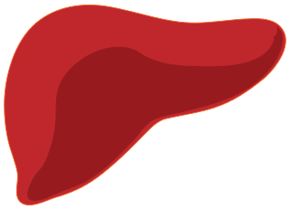

Machine Learning
Microsoft data linking

Over 2010–13, I was one of two researchers and a small handful of developers, building a production system for data integration—an application of machine learning in databases that leveraged our research at Microsoft e.g., [VLDB’12]. The system shipped multiple times internally (resulting in 4x ShipIt! awards for sustained product transfer). Notable applications were to the Bing Search engine across multiple verticals, and the Xbox game console. After the 2011/12 refresh, in which our data integration was a key contribution from Research, Xbox revenue increased by several $100m (due to increased sales of consoles and Xbox Live subscriptions). Within Microsoft Research, this impact was attributed to our small team. In Bing’s social vertical, our system matched over 1b records daily. I continue to work on data integration at Melbourne.
Predicting liver transplantation failure

Through 2016 my group with colleague Bailey collaborated with the Austin Hospital’s transplantation unit, on predicting outcomes (graft failure) of liver transplantation for Australian demographics. With machine learning-based approaches, PhD student Yamuna Kankanige could improve by over 20% the predictive accuracy of the Donor Risk Index [Transplantation’17]—a risk score widely used by Australian surgeons today, in planning transplants and follow-up interventions.
Privacy & Security
30yr Medicare/PBS dataset and the Re-identification Criminalisation Bill
With colleagues Teague and Culnane, I helped uncover one of the largest privacy breaches in Australian history 2016–17. Federal health and human services in mid-2016 released an open dataset of 30 years of Medicare and Pharmaceutical Benefits Schemes transaction records, for 10% of the Australian population. The intention was to drive health economics research, for evidence-based policy development. Unfortunately minimal privacy protections were in place, while the data reported sensitive treatments e.g., for AIDS, late-term abortions, etc. Initially we completely reidentified doctors, due to improper hashing of their IDs. As a result the dataset was taken offline and a public statement released by the Department. It could not be recalled. A year later we announced we had reidentified patients such as well-known figures in Australian sport and politics.

The day after Medicare’s retraction, the Attorney General published a plan to legislate against reidentification of Commonwealth datasets. In the months to come the Reidentification Criminal Offence Bill (an amendment to the Privacy Act 1988) was introduced to Parliament criminalising the act of reidentification, unless with prior permission. The bill, if passed, would be retroactively applied and reverse the burden of proof on accused. While stifling security experts and journalists responsibly disclosing existing privacy breaches to the government, the bill would not prevent private corporations or foreign entities outside Australian jurisdiction from misusing Commonwealth data. Of 15 submissions to the ensuing Parliamentary Inquiry examining the appropriateness of the bill, 14 were against including the Law Council of Australia, Australian Bankers’ Association, and EFF. Our submission to the inquiry achieved significant impact, being directly quoted 9 times in the Senate Committee’s final report. We wrote an Op-Ed in the Sydney Morning Herald clearly explaining why criminalising reidentification would do more harm than good. Since then we have made several related submissions, including to the: Data Sharing and Release Consultation 2018 (file 20697), Parliamentary Inquiry into the My Health Record System 2018 (submission #59), ACCC Consumer Data Right draft rules 2019.
Media coverage (2016): zdnet (again), The Register, itnews (again), ABS news, The Guardian, The Age, CSO, HuffPo, Canberra Times, Crickey, ComputerWorld, Gizmodo, Digital Rights Watch, The Saturday Paper
Media coverage (2017 exceeding 1m views): ABC, Sydney Morning Herald, IT News, ZdNet, The Register, SBS News, Business Insider, News.com.au, Daily Telegraph, Brisbane Times, Computer World, LifeHacker, BoingBoing, Northern Star, BuzzFeed
Media coverage (onwards): itnews
Technical privacy assessments: ABS, ONS, Opal

Also with colleagues Culnane and Teague since 2016, I have contributed towards several technical privacy assessments of government data initiatives. Contracted by the Australian Bureau of Statistics (ABS), we have analysed the privacy of several options for name encoding for private record linkage—as might be used for Australian Census data for example. For Transport for NSW, we have performed a technical privacy assessment of a Data61-processed dataset of Opal transport card bus, train, ferry touch ons/offs again under contract. The data has subsequently been published. We have also discovered vulnerabilities in the hashing methodology published by the UK Office of National Statistics in a third privacy assessment (explained here). Common themes to this work are reflected in our 2018 report for the Office of the Victorian Information Commissioner.
Media coverage (2018): Mandarin
Promoting privacy through cheating at Kaggle

In 2011 with Narayanan (now Princeton) and Shi (now Cornell), I helped demonstrate the power of privacy attacks to Kaggle (a $16m Series A, Google acquired platform for crowdsourcing machine learning) [IJCNN’11]. After determining the source of an anonymised social network dataset, intended for use in a link prediction contest, we downloaded and linked it to the competition test set. Normally a linkage attack would end there, having re-identified users. We used it to look up correct test answers and win the competition by ‘cheating’. No privacy breach resulted and contestants remained able to compete. However the result raised awareness for Kaggle, to the stark reality of privacy attacks. Team member Narayanan subsequently consulted on the privacy of the $3m Heritage Health Prize dataset.
Side-channel attacks on Firefox

With a Berkeley group led by Dawn Song [report], I helped improve the security of Mozilla’s open-source development processes. While open-source projects tend to improve system security through the principle of ‘many eyes’, Mozilla was publishing security-related commits to the public Firefox web browser source repository, often a month before those commits would be automatically pushed to users. We trained a learning-based ranker to predict which commits were more likely security-related. An attacker could then easily sift through a few commits by hand to find zero-day exploits, on average a month prior to patching. As a result of our work Mozilla made security-related commits private until they were published as patches.
Funding & Awards
Funding
Since arriving at the University of Melbourne Oct 2013, I have been awarded competitive funding (Cat 1–4) of $4.23m total, $2.18m as lead-CI, $1.67m on a per-CI basis. Funding includes:
- 2020–2021 $43k: Facebook 2020 Probability and Programming Research Award, Formalizing and verifying fair data use in collaborative machine learning, Olya Ohrimenko, Ben Rubinstein, Toby Murray.
- 2020–2021 $358k: Facebook Sponsored Research Agreement, Adversarial attacks on machine translation, and their defenses, Trevor Cohn, Benjamin Rubinstein.
- 2020 $237k: Consunet and Defence Science & Technology Group Defence CRC, Distributed Autonomous Spectrum Management (DUST) II, Benjamin Rubinstein, Tansu Alpcan.
- 2019–2020 $237k: Consunet and Defence Science & Technology Group Defence CRC, Distributed Autonomous Spectrum Management (DUST) I, Tansu Alpcan, Benjamin Rubinstein.
- 2019 $31k: Defence Science & Technology Group and Data61/CSIRO Next Gen Tech Fund CRP, Towards Robust Learning Systems via Amortized Optimization and Domain Adaptation, Dinh Phung et al.
- 2018–2019 $50k: Australia Bureau of Statistics Research Contract, Disclosure Risk Analysis, Chris Culnane, Benjamin Rubinstein.
- 2018–2019 $153k: U.S. Army Research Office Research Grant, Towards designing complex networks resilient to stealthy attack and cascading failure, Antoinette Tordesillas, Benjamin Rubinstein, James Bailey, Howard Bondell.
- 2018–2019 $24k: Mondo Power AMSI internship program, Anomaly detection in time series energy consumption data, Benjamin Rubinstein, Leyla Roohi.
- 2018 $31k: Australia Bureau of Statistics Research Contract, Scaling up Bayesian record linkage, Benjamin Rubinstein, Neil Marchant.
- 2018–2019 $77k: Oceania Cyber Security Centre Seed Grant, Detection of Infected Internet-of-Thing Devices to Prevent Distributed Denial of Service Attacks, Sarah Erfani et al.
- 2017–2021 $934k: Defence Science & Technology Group and Data61/CSIRO Next Gen Tech Fund CRP, Adversarial Machine Learning for Cyber, Benjamin Rubinstein et al.
- 2017–2021 $970k: Department of Education and Training Academic Centre for Cyber Security Excellence (ACCSE), Chris Leckie et al.
- 2017–2018 $93k: Defence Science & Technology Group Research Contract, Tactical Security and Health in Multi-Modal Sensor Control and Management, Iman Shames, Benjamin Rubinstein, Farhad Farokhii.
- 2017–2018 $24k: Australia Bureau of Statistics AMSI internship program, Evaluating feasibility of Bayesian entity resolution, Benjamin Rubinstein, Neil Marchant.
- 2017 $168k: Australian Bureau of Statistics Research Contract, Design of securely encrypted (anonymised) linkage keys, Benjamin Rubinstein, Chris Culnane, Vanessa Teague.
- 2017 $30k: Transport for NSW Research Contract, Analysis of privacy protections in Transport for NSW Opal data, Benjamin Rubinstein, Chris Culnane, Vanessa Teague.
- 2017 $35k: Office of the Commissioner for Privacy and Data Protection Research Contract, Implications of de-identification of personal information and impact of de-identification on the Privacy & Data Protection Act (Vic) 2014, Vanessa Teague, Chris Culnane, Benjamin Rubinstein.
- 2016–2018 $370k: Australian Research Council Discovery Early Career Researcher Award (DECRA), Secure and Private Machine Learning, Benjamin Rubinstein.
- 2016–2018 $85k: University of Melbourne DECRA Establishment Grant, Secure and Private Machine Learning, Benjamin Rubinstein.
- 2015 $48k: Melbourne Networked Society Institute Seed Grant, Active Defence, Benjamin Rubinstein et al. Pursuit article
- 2015–2016 $128k: FLI Project Grant, Security Evaluation of Machine Learning Systems, Benjamin Rubinstein. Funds backed by Elon Musk, media: vice news.com.au pursuit
- 2015 $20k: Microsoft Research Azure Machine Learning Award, Big data preparation, Benjamin Rubinstein. In kind support
- 2015–2017 $216k: Australian Research Council Discovery Project, Benjamin Rubinstein. First early-career sole-CI in FOR08, nationally, for 3 years
- 2014 $39k: University of Melbourne ECR Grant, Adversarial Machine Learning, Benjamin Rubinstein.
- 2014 $5k: Amazon AWS Machine Learning Grant, Adversarial Machine Learning, Benjamin Rubinstein.
Awards & Honours
- Best Reviewer Award (2018,2019), Conference on Neural Information Processing Systems (NeurIPS formerly NIPS)
- WiE Best Postgrad Paper Prize (2017), IEEE Australia Council for PhD student Maryam Fanaeepour’s joint work
- Victorian Young Tall Poppy Science Award (2016), Australian Institute of Policy & Science
- Microsoft Azure ML Award (2015), Microsoft Research
- Excellence in Research Award (2014), Dept CIS, University of Melbourne
- Gold Star Award (2011), Microsoft Research, top employee accolade
- ShipIt! Awards (2010–12, four times), Microsoft, each for sustained product transfer
- Yahoo! Key Scientific Challenge Prize (2009), Adversarial Machine Learning
- Siebel Scholars Fellowship (2009), Siebel Foundation, final year graduate fellowship
- Best Poster Award (2008), 11th Int. Symp. Recent Advances in Intrusion Detection (RAID’08)
- UC Regents University Fellowship (2004–05), UC Berkeley, first year graduate fellowship
- IEEE Computer Society Larson Best Paper Prize (2002), ugrad papers worldwide for
Service
Speaking engagements
- 06/2019: Invited speaker at the Challenges and New Approaches for Protecting Privacy in Federal Statistical Programs Workshop organised by the Committee on National Statistics (CNSTAT) at the U.S. National Acadmies of Sciences, Engineering, and Medicine, Washington D.C. Talk videos
- 04/2019: Invited speaker at the Privacy and the Science of Data Analysis workshop at the Simons Institute for the Theory of Computing, Berkeley. Talk video.
- 08/2018: Keynote at the GIScience’18 Location Privacy and Security Workshop (LoPaS)
- 06/2018: Panelist, Panel on Data Privacy, Oxford-Melbourne Digital Marketing and Analytics Executive Program.
- 02/2018: Invited speaker at Data61/DSTG Cyber Summer School
- 02/2018: Session chairing Security, Privacy & Trust at AAAI2018
- 10/2017: Invited speaker at the DARPA Safe ML workshop at the Simons Institute for the Theory of Computing, Berkeley.
- 04/2017: Invited speaker at the Melbourne CTO Club (comprising over a dozen CTOs of mid-sized tech firms).
- 03/2017: Speaker at the AMIRA Exploration Managers Conference, RACV Club Healesville.
- 01/2017: Speaking at Telstra (data science)
- 11/2016: Speaker/panelist at the public lecture Human and Machine Judgement and Interaction Symposium, Uni Melbourne
- 05/2016: Invited speaker at the National Fintech Cyber Security Summit at the Ivy, Sydney hosted by Data61, Stone & Chalk, the Chief Scientist of Australia.
- 04/2016: Speaking at Telstra (data science)
- 02/2016: Speaking at Samsung Research America and UC Berkeley.
- 02/2016: Speaking in two exciting panels at AAAI’2016 on keeping AI beneficial and challenges for AI in cyber operations.
- 12/2015: Plenary at the 12th Engineering Mathematics and Applications Conference (EMAC’2015) the biennial meeting of the EMG special interest group of ANZIAM
- 07/2015: Keynote at the Australian Academy of Science Elizabeth and Frederick White Research Conference on Mining Data for Detection and Prediction of Failure in Geomaterial
- 11/2014: Facebook (Menlo Park) talk Data Integration through the Lens of Statistical Learning
Strategic plan
As member of the Australian Academy of Science’s National Committee for Information and Communication Sciences (2015–2020) contribued towards the development of the Digital Futures strategic plan.
Program committee membership
- ICML’2011,’12,’17,’18,’19 (area chair),’20 (area chair), NeurIPS (formerly NIPS)’2014,’17,’18,’19,’20 area chair, AAAI’2018 (senior PC), ICDE’2016,’17, AISTATS’2017, CSCML’2017, KDD’2015,’16, CSF’2014 (co-chair AI & Security Track), SIGMOD’2013, IJCAI’2013
- Workshop PCs: 2019 USENIX Security and AI Networking Conference (ScAINet’19) (at USENIX Security), Privacy Preserving Machine Learning (PPML) 2018 (at NeurIPS), ’19 (at CCS), Deep Learning for Security 2018 (at IEEE S&P), AI for Cyber Security (AICS at AAAI)’2017,’18, AI & Security (AISec at CCS)’2009,’10,’13,’15,’16,’17,’18,’19, S+SSPR’2016 (at ICPR), PSDML’2010 (at ECML/PKDD)
- Organiser: ACM AI & Security workshops (AISEC)’2011,’12,’14, Learning, Security & Privacy workshop (at ICML’2014)
- Chair, Demonstration and Workshop Local Arrangements SIGMOD’2015